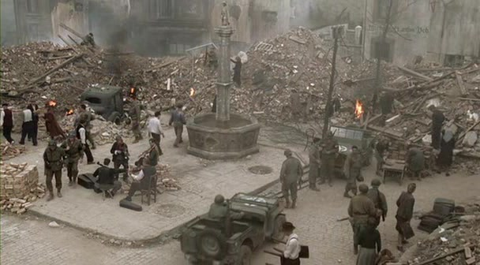
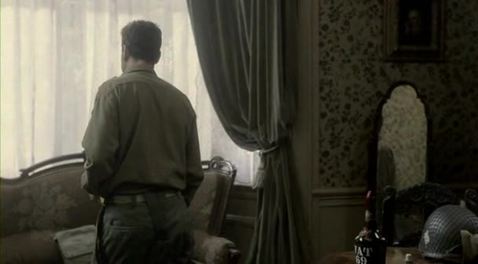
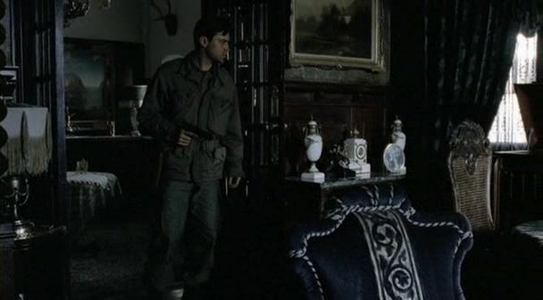
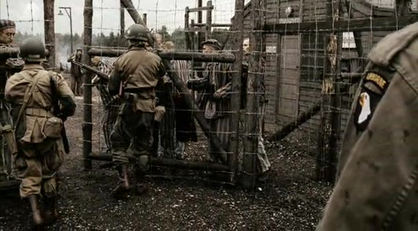
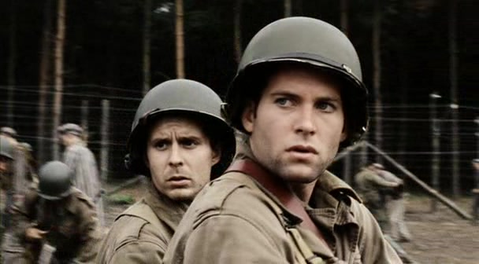
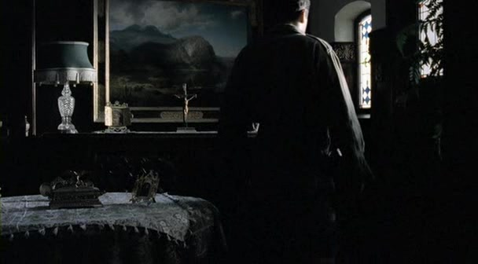
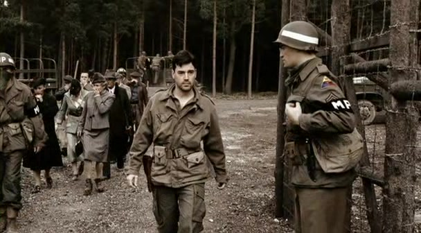

01
德国小镇废墟／先展示后来，再进入回叙先听到音乐，还没有看见营门
本集首尾回环段落中的小镇清理与弦乐；不是营地清理画面。
剧情事实街头弦乐四重奏伴随居民清理废墟。尼克森纠正战友：演奏的是贝多芬。随后本集转入此前的经历；结尾回到这一场景。片头日期与后文死讯冲突，时间线仅表示叙事先后。[6]
这一场为什么重要 · 个人解读
观众最初容易把清理街道理解为恢复正常。回到同一音乐时，我们已经知道附近发生过什么。镜头没有替音乐宣布无罪，也没有把德国文化一笔抹去；相同声音承载了不同的认识。

为何而战 · 1945 年春｜德国与兰茨贝格周边；剧中日期存在冲突
第九集把胜利前夕拍成了意义最不稳定的时刻。德国抵抗渐弱，士兵谈论回家，尼克森却在酒、坏消息与阵亡通知之间失去方向。林中一扇营门，让他们从自己的损失看见另一群人的处境；但看见并不等于懂得怎样救助。本文只涉及第九集与此前剧情，以人物反应和环境配图梳理发现、翻译与救助的难题。剧中的人物言行属于戏剧化叙述，不能直接作为历史证言；片头日期和真实营地解放顺序另有校正。[1]
本页范围回顾本集与必要的前集背景；以下主题分析针对剧集呈现，历史补充另作说明。
8 个关键场景，连起本集的因果与变化。
按剧中叙事顺序排列。批注默认展开，可直接阅读场景的意义。
剧情事实街头弦乐四重奏伴随居民清理废墟。尼克森纠正战友：演奏的是贝多芬。随后本集转入此前的经历；结尾回到这一场景。片头日期与后文死讯冲突，时间线仅表示叙事先后。[6]
观众最初容易把清理街道理解为恢复正常。回到同一音乐时，我们已经知道附近发生过什么。镜头没有替音乐宣布无罪，也没有把德国文化一笔抹去；相同声音承载了不同的认识。

尼克森在窗前的本集驻地画面；作为这一段疲惫与交谈的代表配图，不是空降事故截图。剧情事实尼克森向温特斯讲述空降中飞机遭击、自己和少数人脱险。他被告知调回营部 S3，但更困扰他的是：怎样向阵亡者的父母解释他们的死亡。[2]
降职是制度给出的评价，写信却是私人无法卸下的责任。他没有在战斗中开枪，并不意味着战争没有穿过他的生活。温特斯的回答维持了对战友牺牲的尊重，却无法替朋友消除失去意义的感觉。
驻地与向南行进的车队／发现营地之前
剧情示意图剧情事实佩康特对渴望战斗的新兵奥基夫发火。尼克森收到离婚来信；车上谈起战后的生活，韦伯斯特又向撤退的德军斥骂，质问为什么自己的生活会被战争打断。[5]
同一句“战争快结束了”，在新兵耳中意味着错过经历，在老兵耳中意味着终于可能活着离开。愤怒的对象并不相同，底层却都是被夺走的生活。这里的闲谈为后面发现营地留下了理解的落差。

本集尼克森进入军官家宅寻酒的画面；与军官妻子首次相遇的同一段落。剧情事实尼克森闯入一户德国人家找酒，拿起军官的肖像，随后让它跌落。军官的妻子出现，冷冷地看着他。他没有得到想要的东西，离开了房间。[1]
这场相遇先让尼克森显得像侵犯别人生活的占领者。妻子的凝视要求观众看到她的尊严，同时肖像提醒我们屋内并非没有政治与军队的痕迹。到第二次相遇时，镜头会迫使双方面对家宅之外的现实。

本集营门开启与士兵接触营内人员的画面；不是战争年代的照片。剧情事实巡逻队在树林中发现被遗弃的营地。佩康特赶回驻地向温特斯报告，却无法清楚说出那是什么。军官随后抵达，士兵打开营门，原本的巡逻转为救助。[2]
过去报告的词是敌军、火力、伤员与阵地；眼前的情景超出了士兵熟悉的任务分类。佩康特说不清，不等于信息不重要。温特斯需要先相信部下的震动，亲自看见，才能重新定义眼前的责任。

本集营内士兵的反应镜头；用来观察目击者的震动，并非利布戈特问话的特写。剧情事实温特斯找来会德语的利布戈特。幸存者讲述守卫离开前的杀害与纵火；问及关押原因时，利布戈特列出他们原来的职业，并明确提到犹太人与其他遭纳粹迫害的群体。[3]
温特斯从自己熟悉的“罪犯”类别发问，翻译一步步拆开这个错误前提。职业让人重新成为医生、音乐家和农民。利布戈特承担的远超词语转换：他必须在指挥者与幸存者之间承受每句话的重量。
营地／送来食物之后
剧情示意图剧情事实士兵先送水、食物与毯子。医生肯特随后要求停止自由发放食物，并集中幸存者以监督治疗。温特斯让利布戈特解释暂时返回营地的命令，后者难以开口。[3]
刚打开的营门又成为一道边界，难怪这个命令像背叛。剧中医生解释的是严重饥饿者的治疗风险，但幸存者接收到的首先是再次受限。善意需要专业判断，也需要承担解释、寻找更好安置的责任。
 本集军官妻子参加营地清理时抬头的镜头；呈现见证与对视，不作恐怖装饰。
本集军官妻子参加营地清理时抬头的镜头；呈现见证与对视，不作恐怖装饰。剧情事实当地居民被要求到营地清理、埋葬死者。尼克森再次遇到那位军官的妻子；她参与了清理工作，两人长久对视。本集随后回到废墟中的弦乐与新的军令。[1]
第一次，他侵入她的私人空间；第二次，她被带到公共罪行留下的现场。镜头没有交代她此前究竟知道多少，也没有宣判她的内心。对视的力量在于：他们都无法再让家宅的体面遮住眼前发生过的事。
切换阶段，点人物或关系，阅读具体证据。
发现营地之前，降职、失去生活与归乡愿望占据视野；片头弦乐属于后来的框架场景。
用具体场景对照本集的两种处境。

一个疲惫的美国军官闯入家宅。观看的中心暂时是酒、失序和对主人尊严的侵犯。

军官的妻子与尼克森都置身于罪行留下的现场。观众已经听见幸存者，无法只沿私人遭遇判断。
家宅、肖像与主人冷眼
↔营门、清理劳动与见证者
寻找酒来度过自己的坏消息
↔直面无法靠酒解释的公共罪行
妻子的冷眼不证明她无辜
↔妻子的对视也不等于承认了全部知情
这里改变的是我们掌握的信息与尼克森所处的空间。剧集没有提供这位妻子的完整证词；有力的解读应保留这一空白，而不是用一个眼神给所有德国居民定罪。
短句原文、中文自译，以及它在这一刻的分量。
“You really still believe that?”你真的还相信这一点吗？
温特斯建议肯定死者的牺牲，尼克森反问。
他质疑的既是措辞，也是自己还能否相信这种措辞。讥讽的语气挡在脆弱前面；朋友听见的应该是疲惫，而不仅是冒犯。中文为本页自译。[3]
英文短句核对来源列在篇末；中文为本页自译。配图的场景与出处随卡片标注。
只沿本集与此前的线索回看，不揭示后续情节。
剧情事实尼克森需要为阵亡者写信，同时收到妻子的离婚消息。[5]
个人解读一种信解释别人回不了家，另一种信告诉自己回去后也可能没有原来的生活。私人坏消息没有抹掉公共责任，公共责任也不会取消私人痛苦。
剧情事实营门被打开后，剧中医疗安排又要求幸存者暂时集中留在营地。[3]
个人解读开门是人人看得见的解放动作，后续照护却需要资源、知识与安置。剧集让这两个阶段产生冲突：帮助不能只靠冲动，也不能只靠不解释的限制。
剧情事实弦乐出现在开头与结尾，清理废墟的画面构成本集的框架。[1]
个人解读开头的旋律可以像战后生活的预告；结尾再听，无法忘记林中的营地。回环改变了观众，不需要换一首更悲伤的曲子。
本集片头写“1945 年 4 月 11 日”，随后回叙；结尾回到同一弦乐场景，尼克森却宣布希特勒死讯。真实自杀日期为 4 月 30 日。这是剧中日期错误，页面的“故事时间”只重排叙事先后，不把营地发现或死讯强行放到 4 月 11 日。[8]
本集把林中发现组织为 E 连的巡逻经历。美国大屠杀纪念馆记载：Kaufering IV 是达豪附属营，第 12 装甲师 1945 年 4 月 27 日先到，101 空降师次日到达。因此不能把本集概括成“E 连在史实上首先解放达豪”。[7]
Kaufering 是服务于军工建设的强迫劳动营网络，囚禁大批犹太人；严重饥饿、疾病和暴力造成大量死亡，撤退前守卫还纵火杀害无法移动的囚犯。剧中谈到其他地方的毒气室与焚尸设施，不能反过来认定本集营地拥有完全相同的设施。[7]
本集没有用集中营把此前所有痛苦简单兑换成光荣。士兵仍然疲惫，尼克森仍有自己的崩塌，幸存者更需要长久的治疗与生活。新的认识是：战争中要阻止的恶，以及眼前需要照护的人，都有了具体面貌。回到街头的音乐，不是遗忘的许可，而是提醒我们让文化、日常与被遮住的事实同时进入记忆。
回到档案首页 ↑